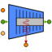

| Q_loss | PORTS_LIB.analog_signal | (n = 1) | OUT | Power loss in the form of heat | |
| f_in | CRYOLIB.fluid | IN | |||
| f_out | CRYOLIB.fluid | OUT | |||
| speed | PORTS_LIB.analog_signal | (n = 1) | IN | Compressor speed signal in % (0-100) | |
| start | PORTS_LIB.bool_signal | (n = 1) | IN | Start signal |
| FrequencyRange | TABLE_1D | Frequencies at 0 and 100% input | |||
| MaxFrequency | REAL | 82 | PLC imposed maximum frequency allowed | Hz | |
| MotorRPM | TABLE_1D | Actual rotational speeds of motor at given frequencies | |||
| bore | REAL | 40 | Bore diameter | mm | |
| etaIse | REAL | 0.75 | Isentropic efficiency | ||
| etaMot | REAL | 0.9 | Motor efficiency | ||
| etaVol | REAL | 0.95 | Volumetric efficiency | ||
| nCyl | INTEGER | 4 | No. of cylinders | ||
| stroke | REAL | 39.3 | Stroke length | mm |
| RPM | REAL | Revolution speed of compressor crank | rpm | ||
| T | REAL | Refrigerant temperature | K | ||
| disp | REAL | Displacement volume per revolution of the crank | m^3 | ||
| hs | REAL | Isentropic outlet enthalpy | J/kg | ||
| ier | INTEGER | Error codes | |||
| ipx | INTEGER | Error codes | |||
| ipy | INTEGER | Error codes | |||
| m | REAL | Refrigerant mass flow rate | kg/s | ||
| motorLoss | REAL | Motor power losses, dissipated as heat | W | ||
| nu | REAL | Frequency at the inlet signal | Hz | ||
| power | REAL | Power consumption | W | ||
| rho | REAL | Inlet density | kg/m^3 | ||
| s | REAL | Outlet entropy | J/K |
Document generated automatically (Date: 2021:03:16, Time: 14:29:38)